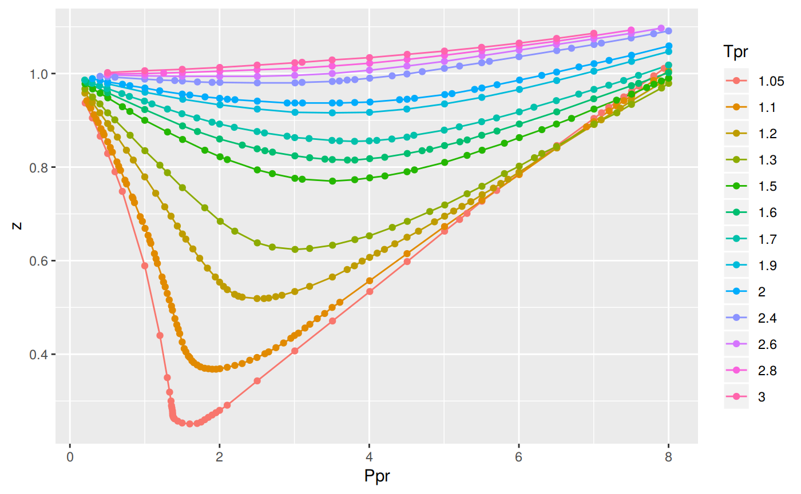

Computational tools for chemical, petrochemical and petroleum engineers. Calculates the error measures or deviation between different correlations for gas compressibility compared to the original Standing-Katz chart.
Motivation
For the development of vertical lift performance (VLP) curves and other petroleum engineering calculations, it is necessary to calculate properties of hydrocarbons in mixtures, liquid and gaseous phases. Compressibility is one of these hydrocarbon properties. It is important to count with the apropriate correlation and know its range of applicability in order to calculate other properties dependant of z.
There are several compressibility correlations. In this package, few of them, or the most used in the industry, are being evaluated. There have been extensive studies on compressibility correlations. This evaluation is different in the sense that provides a graphical view of the range of applicability as well statistical measures of the errors, besides that the work has been written fully in R providing the analysis and results for peer review and reproducibility purposes. All the code, functions, notes, datasets are available via GitHub.
This analysis focus on sweet hydrocarbon gases. Compressibility correlations for sour gases are little bit more complicated since they show significant deviations from the curves in the Standing-Katz charts. Effects of CO2, H2S and N2 have to be accounted for. In a future release of zFactor correlations for sour hydrocarbons gases will possibly be covered.
Correlations used in this study
The correlations that are implemented in R for the package zFactor are:
Beggs and Brill (BB)
[@Azizi2010]Hall and Yarborough (HY)
[@Hall1973]Dranchuk and Abou-Kassem (DAK)
[@Dranchuk1975]Dranchuk, Purvis and Robinson (DPR)
[@Dranchuk1973]A correlation by Shell Oil Company (SH)
[@Kumar2004],[@bahadori],[@Almeida2014],[@Al-Anazi2011],[@Azizi2010],[@Mohamadi-Baghmolaei2015]. The Shell correlation was found cited in two books and several papers (including the equation and constants), but the original paper or authors could not be identified.A correlation developed with Artificial Neural Networks (Ann10) by Kamyab et al.
[@Kamyab2010]An explicit correlation by I. Papp
[@Papp1979]mentioned in the comparative analysis paper by Gabor Takacs[@Takacs1989]. Papp’s paper is not available in English.
Installation
I recommend installing from GitHub using devtools, that way you get the latest and greatest version. CRAN release cycles allows updates every one to two months.
You can install the latest version of zFactor from GitHub with:
Or, if your prefer, from CRAN:
Usage
library(zFactor)
# get `z` values from the Standing-Katz chart
tpr <- c(1.2, 1.3, 1.5, 2.0, 3.0)
ppr <- c(0.5, 1.5, 2.5, 3.5, 4.5, 5.5)
getStandingKatzMatrix(ppr_vector = ppr, tpr_vector = tpr,
pprRange = "lp")
#> 0.5 1.5 2.5 3.5 4.5 5.5
#> 1.20 0.893 0.657 0.519 0.565 0.650 0.741
#> 1.30 0.916 0.756 0.638 0.633 0.684 0.759
#> 1.50 0.948 0.859 0.794 0.770 0.790 0.836
#> 2.00 0.982 0.956 0.941 0.937 0.945 0.969
#> 3.00 1.002 1.009 1.018 1.029 1.041 1.056
# calculate `z` using the Beggs-Brill correlation
z.BeggsBrill(pres.pr = 1.5, temp.pr = 2.0)
#> [1] 0.962902
# calculate `z` using the Hall-Yarborough correlation
z.HallYarborough(pres.pr = 1.5, temp.pr = 2.0)
#> [1] 0.9580002
# calculate `z` using the correlation Dranchuk-AbousKassem
ppr <- c(0.5, 1.5, 2.5, 3.5, 4.5, 5.5, 6.5)
tpr <- c(1.05, 1.1, 1.7, 2)
z.DranchukAbuKassem(ppr, tpr)
#> 0.5 1.5 2.5 3.5 4.5 5.5 6.5
#> 1.05 0.8300683 0.2837318 0.3868282 0.5063005 0.6239783 0.7392097 0.8521762
#> 1.1 0.8570452 0.4463987 0.4125200 0.5178068 0.6281858 0.7378206 0.8458725
#> 1.7 0.9681353 0.9128087 0.8753784 0.8619509 0.8721085 0.9003962 0.9409634
#> 2 0.9824731 0.9551087 0.9400752 0.9385273 0.9497137 0.9715388 1.0015560
# We do the same with the Dranchuk-Purvis-Robinson correlation
# but we change the values of the isotherms `Tpr`
tpr <- c(1.4, 1.4, 1.6, 1.7, 1.8)
z.DranchukPurvisRobinson(pres.pr = ppr, temp.pr = tpr)
#> 0.5 1.5 2.5 3.5 4.5 5.5 6.5
#> 1.4 0.9374909 0.8155126 0.7275722 0.7083606 0.7404910 0.7977524 0.8666456
#> 1.4 0.9374909 0.8155126 0.7275722 0.7083606 0.7404910 0.7977524 0.8666456
#> 1.6 0.9602585 0.8891708 0.8399510 0.8230070 0.8364902 0.8709715 0.9183151
#> 1.7 0.9677844 0.9121791 0.8752677 0.8630002 0.8743271 0.9033216 0.9440582
#> 1.8 0.9736897 0.9298230 0.9022519 0.8944207 0.9053965 0.9311395 0.9672850
# now we use the relative undocumented Shell correlation
z.Shell(ppr, tpr)
#> 0.5 1.5 2.5 3.5 4.5 5.5 6.5
#> 1.4 0.9357838 0.8097802 0.7271788 0.7040931 0.7315325 0.7907497 0.8641572
#> 1.4 0.9357838 0.8097802 0.7271788 0.7040931 0.7315325 0.7907497 0.8641572
#> 1.6 0.9613216 0.8863715 0.8331061 0.8120822 0.8224613 0.8570695 0.9073678
#> 1.7 0.9711067 0.9150837 0.8740757 0.8563697 0.8629757 0.8901157 0.9321262
#> 1.8 0.9794808 0.9395295 0.9097288 0.8964473 0.9015059 0.9233190 0.9584750
# the newly added Papp correlation
z.Papp(ppr, tpr)
#> 0.5 1.5 2.5 3.5 4.5 5.5 6.5
#> 1.4 0.9408336 0.8010648 0.7076525 0.6906870 0.7299354 0.7958370 0.8705316
#> 1.4 0.9408336 0.8010648 0.7076525 0.6906870 0.7299354 0.7958370 0.8705316
#> 1.6 0.9657774 0.8864710 0.8252564 0.8026787 0.8182983 0.8604984 0.9168234
#> 1.7 0.9736623 0.9138939 0.8665932 0.8471834 0.8578133 0.8919610 0.9406180
#> 1.8 0.9796287 0.9345928 0.8988524 0.8837788 0.8922563 0.9208289 0.9632719
# and finally the correlation Kamyab et al that uses Artificial Neural Networks
z.Ann10(ppr, tpr)
#> 0.5 1.5 2.5 3.5 4.5 5.5 6.5
#> 1.4 0.9367118 0.8179531 0.7301083 0.7058966 0.7360320 0.7938440 0.8650626
#> 1.4 0.9367118 0.8179531 0.7301083 0.7058966 0.7360320 0.7938440 0.8650626
#> 1.6 0.9607316 0.8909372 0.8413772 0.8186001 0.8303206 0.8669610 0.9174184
#> 1.7 0.9682749 0.9146453 0.8767457 0.8581919 0.8672123 0.8978116 0.9413442
#> 1.8 0.9758251 0.9330673 0.9033038 0.8900081 0.8983954 0.9253309 0.9638663Range of Applicability
How to interpret the colors? We use the Mean Absolute Percentage Error or MAPE to visualize how close the correlation follow the experimental values of the Standing-Katz chart.
-
Blue: the MAPE is zero or near zero -
Yellow: the MAPE is around 10 percent. -
Red: the MAPE has reached 25%. -
Grey: the mean absolute percentage error is above or way above 25%.
You can see for yourself which correlation is more stable at different ranges of pseudo-reduce pressures and temperatures.


Comparative Analysis
The comparative analysis shows tables with different error measurements:
MSE: Mean Squared Error
RMSE: Root Mean Squared Error
RSS: Residual sum of Squares
RMSLE: Root Mean Squared Logarithmic Error. Penalizes understimation.
MAPE: Mean Absolute Percentage Error = AARE
MPE: Mean Percentage error = ARE
MAE: Mean Absolute Error
MAAPE: Mean Arc-tangent Absolute Percentage ErrorMAAPE was proposed by
[@Kim2016]. Other authors consulted for the error measures are[@Makridakis1993],[@Chen2017],[@Kobayashi2000],[@Myttenaere2016],[@Syntetos2013], and[@Armstrong1992].
What you can do with zFactor
- Find
zwith any of the correlations provided - Get values from the Standing-Katz chart at any of the isotherms limited by the pseudo-reduced pressures (
Ppr) digitized - Find what isotherms or pseudo-reduced temperatures (
Tpr) are available from the Standing and Katz chart - Find what pseudo-reduced pressure points are available
- Plot any of the Standing-Katz isotherms to view
zin graphical form - Plot a tile chart to show the range of applicability of the correlations. In essence, get an idea of the accuracy by the location of the desired point at Tpr and Ppr
- Get a statistics table when comparing any of the correlations to the Standing-Katz chart
- Get a matrix of
zvalues calculated from any correlation where the rows are the pseudo-reduced temperatures and the columns the pseudo-reduced pressures - Plot one or multiple isotherms


Ploting all the Tpr curves of Standing-Katz chart using lapply, getStandingKatzData and data.table::rbindlist:
library(zFactor)
library(ggplot2)
library(data.table)
tpr_vec <- c(1.05, 1.1, 1.2, 1.3, 1.5, 1.6, 1.7, 1.9, 2.0, 2.4, 2.6, 2.8, 3.0)
all_tpr2 <- (lapply(tpr_vec, function(x) getStandingKatzData(tpr = x)))
names(all_tpr2) <- tpr_vec
all_tpr_df <- data.table::rbindlist(all_tpr2, idcol = TRUE)
colnames(all_tpr_df)[1] <- "Tpr"
ggplot(all_tpr_df, aes(x=Ppr, y=z, group=Tpr, color=Tpr)) +
geom_line() +
geom_point()
Build a table of statistical errors between a correlation and SK chart
library(ggplot2)
library(tibble)
library(dplyr)
# get all Tpr curves at low pressure (lp)
tpr_all <- getStandingKatzTpr(pprRange = "lp")
ppr <- c(0.5, 1.5, 2.5, 3.5, 4.5, 5.5, 6.5)
sk_corr_all <- createTidyFromMatrix(ppr, tpr_all, correlation = "DPR")
grouped <- group_by(sk_corr_all, Tpr, Ppr)
smry_tpr_ppr <- summarise(grouped,
RMSE = sqrt(mean((z.chart-z.calc)^2)),
MPE = sum((z.calc - z.chart) / z.chart) * 100 / n(),
MAPE = sum(abs((z.calc - z.chart) / z.chart)) * 100 / n(),
MSE = sum((z.calc - z.chart)^2) / n(),
RSS = sum((z.calc - z.chart)^2),
MAE = sum(abs(z.calc - z.chart)) / n(),
RMLSE = sqrt(1/n()*sum((log(z.calc +1)-log(z.chart +1))^2))
)
as.tibble(smry_tpr_ppr)
#> # A tibble: 112 x 9
#> Tpr Ppr RMSE MPE MAPE MSE RSS MAE RMLSE
#> <chr> <dbl> <dbl> <dbl> <dbl> <dbl> <dbl> <dbl> <dbl>
#> 1 1.05 0.5 0.000976 0.118 0.118 9.52e-7 9.52e-7 9.76e-4 5.33e-4
#> 2 1.05 1.5 0.0320 12.6 12.6 1.02e-3 1.02e-3 3.20e-2 2.52e-2
#> 3 1.05 2.5 0.0445 13.0 13.0 1.98e-3 1.98e-3 4.45e-2 3.26e-2
#> 4 1.05 3.5 0.0361 7.67 7.67 1.31e-3 1.31e-3 3.61e-2 2.43e-2
#> 5 1.05 4.5 0.0271 4.54 4.54 7.36e-4 7.36e-4 2.71e-2 1.68e-2
#> 6 1.05 5.5 0.0137 1.89 1.89 1.88e-4 1.88e-4 1.37e-2 7.92e-3
#> 7 1.05 6.5 0.00809 0.957 0.957 6.55e-5 6.55e-5 8.09e-3 4.38e-3
#> 8 1.1 0.5 0.00264 0.309 0.309 6.95e-6 6.95e-6 2.64e-3 1.42e-3
#> 9 1.1 1.5 0.0169 3.98 3.98 2.87e-4 2.87e-4 1.69e-2 1.18e-2
#> 10 1.1 2.5 0.0191 4.85 4.85 3.63e-4 3.63e-4 1.91e-2 1.36e-2
#> # … with 102 more rowsSummary of MAPE statistics
This function shows a statistical summary of the Mean Absolute Percentage Error of all the correlations. We are taking the mean, maximum error, minimum eroor, the median and the mode in the whole range of each opf the correlations.
library(zFactor)
stats_of_z.stats()
#> BB HY DAK DPR SH
#> mean 13.8862628 0.818657798 0.769721132 0.81237862 4.1530402
#> max 554.1872335 22.481448009 12.777908779 12.96594664 30.3942954
#> min 0.0153618 0.002422012 0.000609287 0.02057809 0.0231023
#> median 1.0402029 0.220154744 0.245336341 0.26714131 1.1092930
#> Mode 0.4281138 0.418077023 0.128870880 0.11769033 0.4389189
#> N10 PP
#> mean 0.163515716 2.098729377
#> max 1.153159851 85.482666496
#> min 0.007209524 0.000507908
#> median 0.123437923 0.670820910
#> Mode 0.419773370 0.559623816Vignettes
The vignettes contain examples on the use and analysis of the various correlations.
- StandingKatz_chart.Rmd
- Beggs-Brill.Rmd
- Hall-Yarborough.Rmd
- Dranchuk-AbouKassem.Rmd
- Dranchuk-Purvis-Robinson.Rmd
- shell.Rmd
- ANN.Rmd
- Papp.Rmd
How the Standing-Katz chart was constructed
The Standing-Katz (SK) chart data has been read directly from a scanned figure of the original plot drawn by Standing and Katz in 1951. The software used to digitize the data is graphClick for the operating system osX by Apple. This software has been tested and qualified by scolars working on a similar task of digitizing data. [@Rakap2016]
Each one of the SK chart pseudo-reduce temperature curves has been digitized. There are some curves where more points were taken to describe the curvature better. Other curves are almost linear and few points were necessary to define the curve.
References
The following books and papers were consulted during the development of this package:
[1] B. D. Al-Anazi, G. Pazuki, M. Nikookar, et al. “The prediction of the compressibility factor of sour and natural gas by an artificial neural network system”. In: Petroleum Science and Technology 29.4 (2011), pp. 325-336. DOI: 10.1080/10916460903330080. <URL: http://doi.org/10.1080/10916460903330080>.
[2] J. C. de Almeida, J. A. Velásquez, and R. Barbieri. “A Methodology for Calculating the Natural Gas Compressibility Factor for a Distribution Network”. In: Petroleum Science and Technology 32.21 (2014), pp. 2616-2624. DOI: 10.1080/10916466.2012.755194. eprint: http://dx.doi.org/10.1080/10916466.2012.755194. <URL: http://dx.doi.org/10.1080/10916466.2012.755194>.
[3] J. Armstrong and F. Collopy. “Error measures for generalizing about forecasting methods: Empirical comparisons”. In: International Journal of Forecasting 8.1 (Jun. 1992), pp. 69-80. DOI: 10.1016/0169-2070(92)90008-w. <URL: https://doi.org/10.1016/0169-2070(92)90008-W>.
[4] I. M. Azizi N. Behbahani R. “An efficient correlation for calculating compressibility factor of natural gases”. In: Journal of Natural Gas Chemistry Volume 19.Issue 6, 2010, (2010), pp. 642-645. DOI: 10.1016/S1003-9953(09)60081-5. <URL: http://doi.org/10.1016/S1003-9953(09)60081-5>.
[5] A. Bahadori. Fluid Phase Behavior for Conventional and Unconventional Oil and Gas Reservoirs. ISBN 978-0-12-803437-8. Houston, Texas: Gulf Publishing, 2016. <URL: https://books.google.com/books?id=BwXeDAAAQBAJ>.
[6] C. Chen, J. Twycross, and J. M. Garibaldi. “A new accuracy measure based on bounded relative error for time series forecasting”. In: PLOS ONE 12.3 (Mar. 2017). Ed. by Z. Gao, p. e0174202. DOI: 10.1371/journal.pone.0174202. <URL: http://journals.plos.org/plosone/article?id=10.1371/journal.pone.0174202>.
[7] P. M. Dranchuk and H. Abou-Kassem. “Calculation of Z Factors For Natural Gases Using Equations of State”. In: Journal of Canadian Petroleum Technology (Jul. 1975). DOI: 10.2118/75-03-03. <URL: https://doi.org/10.2118/75-03-03>.
[8] P. M. Dranchuk, R. Purvis, D. Robinson, et al. “Computer calculation of natural gas compressibility factors using the Standing and Katz correlation”. In: Annual Technical Meeting. Ed. by unknown. Petroleum Society of Canada. 1973. DOI: 10.2118/73-112. <URL: http://doi.org/10.2118/73-112>.
[9] K. R. Hall and L. Yarborough. “A new equation of state for Z-factor calculations”. In: Oil and Gas journal 71.7 (1973), pp. 82-92.
[10] M. Kamyab, J. H. Sampaio, F. Qanbari, et al. “Using artificial neural networks to estimate the z-factor for natural hydrocarbon gases”. In: Journal of Petroleum Science and Engineering 73.3 (2010), pp. 248-257. DOI: 10.1016/j.petrol.2010.07.006. <URL: http://doi.org/10.1016/j.petrol.2010.07.006>.
[11] S. Kim and H. Kim. “A new metric of absolute percentage error for intermittent demand forecasts”. In: International Journal of Forecasting 32.3 (Jul. 2016), pp. 669-679. DOI: 10.1016/j.ijforecast.2015.12.003. <URL: https://doi.org/10.1016/j.ijforecast.2015.12.003>.
[12] K. Kobayashi and M. U. Salam. “Comparing Simulated and Measured Values Using Mean Squared Deviation and its Components”. In: Agronomy Journal 92.2 (2000), p. 345. DOI: 10.1007/s100870050043. <URL: https://www.researchgate.net/publication/243112181_Comparing_Simulated_and_Measured_Values_Using_Mean_Squared_Deviation_and_Its_Components>.
[13] N. Kumar. “Compressibility factors for natural and sour reservoir gases by correlations and cubic equations of state”. MA Thesis. Texas Tech University, 2004. <URL: https://ttu-ir.tdl.org/ttu-ir/handle/2346/1370>.
[14] S. Makridakis. “Accuracy measures: theoretical and practical concerns”. In: International Journal of Forecasting 9.4 ( Dec. 1993), pp. 527-529. DOI: 10.1016/0169-2070(93)90079-3. <URL: https://www.sciencedirect.com/science/article/pii/0169207093900793>.
[15] M. Mohamadi-Baghmolaei, R. Azin, S. Osfouri, et al. “Prediction of gas compressibility factor using intelligent models”. In: Natural Gas Industry B 2.4 (2015), pp. 283-294. DOI: 10.1016/j.ngib.2015.09.001. <URL: http://doi.org/10.1016/j.ngib.2015.09.001>.
[16] A. de Myttenaere, B. Golden, B. L. Grand, et al. “Mean Absolute Percentage Error for regression models”. In: Neurocomputing 192 (Jun. 2016), pp. 38-48. DOI: 10.1016/j.neucom.2015.12.114. <URL: https://doi.org/10.1016/j.neucom.2015.12.114>.
[17] I. Papp. “Uj modszer foldgazok elteresi tenyezojenek szamitasara”. In: Koolaj es Foldgaz (Nov. 1979), pp. 345-47.
[18] S. Rakap, S. Rakap, D. Evran, et al. “Comparative evaluation of the reliability and validity of three data extraction programs: UnGraph, GraphClick, and DigitizeIt”. In: Computers in Human Behavior 55 (2016), pp. 159-166. DOI: 10.1016/j.chb.2015.09.008. <URL: http://doi.org/10.1016/j.chb.2015.09.008>.
[19] A. Syntetos, D. Lengu, and M. Z. Babai. “A note on the demand distributions of spare parts”. In: International Journal of Production Research 51.21 (Nov. 2013), pp. 6356-6358. DOI: 10.1080/00207543.2013.798050.
[20] G. Takacs. “Comparing Methods for Calculating z Factor”. In: Oil and Gas Journal (May. 1989). <URL: https://www.researchgate.net/publication/236510717_Comparing_methods_for_calculating_Z-factor>.